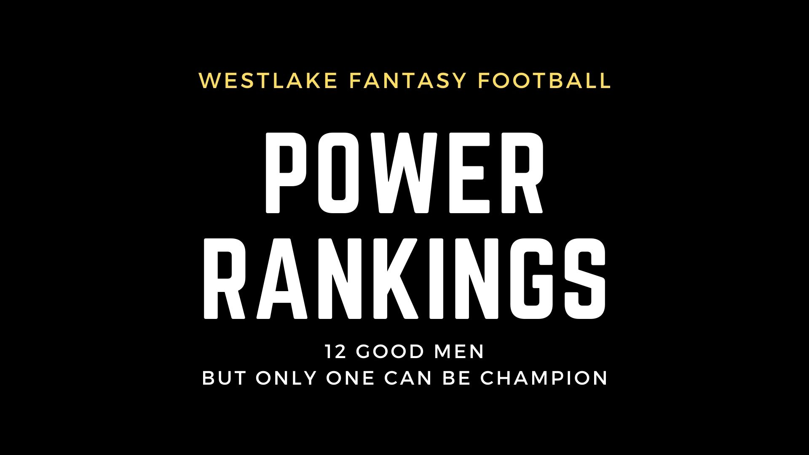

Gentlemen, welcome to your week one recap.
Some dominant performances by the top wide receivers this week, and a few great running backs with a handful of great quarterbacks. As usual, tight ends not named Travis Kelce were dreadful.
In my other 10-team league I'm in with a $50 buy-in in, I put up 182 points with George Kittle out and only 2 from Njoku. When will I learn to not use him? The world may never know.
I'm not surprised Darrel Henderson played better than Cam Akers, but hey, maybe that's just me. I'm also not surprised Allen Robinson put up low points, but maybe he will have better days. Mike Evans did nothing in week one last year. I think we can all Agree Mahomes was drafted too late this year. I got him in the 5th round in that league I'm in. Jonathan Taylor and Cooper Kupp remain dominant, but it's Justin Jefferson that really stole the spotlight with his 40 fantasy points. Ja'marr Chase looked like he usually does. The new trade pieces of AJ Brown, Tyreek Hill, and Davante Adams all had big games.
I could go on all day, but let's get into your individual teams.
Quick announcement, This is a very unique and special league and you can all thank Chris for venmoing me $100 for these recaps I do for you guys. If you don't want me to do these, please let me know because it's taken me about 2 hours of hard work tonight at least. If you do want to support these rankings please donate to the league treasurer and he will be reimbursed for what I asked him to pay me when I was in between jobs. Money talks, and I want to hear what you guys have to say about my rankings.
1.
Anti Svax - Sven Svennefiord (drafted by Max)
Glorious week one. I think it could be better. I'm not thrilled about the Montgomery pick with the utilization of the annoyingly productive Khalil Herbert. I'm also not fond of waiting for Njoku but all tight ends are so bad you might as well wait. It's going to be the best position to struggle in.
I'm at peace with not being in our league this year as it will be nice to view it from a distance and let Sven manage it. The first move he made addressed our position need at RB and got 2 touchdowns with Hilliard.
QB Josh Allen
-- his rushing and passing floor and ceiling are too muchRB Joe Mixon
-- Horrible game for the Bengals and still put up 20 points. Watch out.RB David Montgomery
-- This game had bad weather so we'll see.WR Ja'Marr Chase
-- He dominated and Tee Higgins is banged up, so is Boyd.WR Amon-Ra St. Brown
-- Got into the endzone againTE David Njoku
-- Njokes on Sven. Njoku is just not part of the Browns game plan as much as I think he should be. If Sven can wait til Watson starts, big days are ahead for Njoku.RB Kareem Hunt
-- he just always does this. Get's multi TD games. I bet he has more of those than Chubb. People forget how good Hunt is at football. He never drops a pass, and never goes down from the first guy.Sven, it was my honour drafting for you. Thank you so much for including me, and I couldn't be happier with you getting the $50 bonus in week one. That was my plan. Let's see if these guys can keep it up. I would try to package deal Montgomery and see if you can trade up. Maybe give Montgomery and Kirk for a better RB option.
2.
New Year New Dad - Justin Silber
Justin was the only team with the firepower to beat Sven this week if he had started Michael Thomas over Allen Robinson. Those are two big-time late round receivers he got and now he knows which one hit and who to start moving forward. I think this is a really good looking team right now if it can stay together. Gerald Everett looks like a genius tight end pick as he's the only one that put up a touchdown besides Kelce. I think Taysom Hill becomes interesting for other teams to try to use.
"Justin managed to snag Patrick freaking Mahomes in the 7th round this year. That is a steal, even without Tyreek Hill." I said that in week one and wow did he fall in our league if that's true. He's just a beast that puts the game away in the first quarter. Sometimes he goes cold later on but not in week one as he put up 5 TD's. I think he's mad about the Bengals comebacks last year and wants to annihilate teams this year and get back to being Superbowl MVP. I predict and MVP year from Mahomes and we'll all kick ourselves for doubting him.
QB Patrick Mahomes
-- 360 Yards, 5 TDs.RB Austin Eckeler
-- hoe hum. Using a lot of other backs.RB Javonte Williams
-- Nice GameWR Mike Evans
-- Great grab in the endzone with one hand.WR Michael Thomas
-- Is he back? I think so.TE Gerald Everett
-- nice strategy of going TE last round. I think Everett makes this team hard to beat.WR Marquise Brown
-- Good fantasy day."I like that this team drafted Michael Thomas but doesn't need him to produce right away. Justin can slot MT in when he starts balling again, and I think he will." Me in week zero. Time to slot him in, Justin. Nice draft and good start/sit decisions, even though they cost you $50 this week.
3.
Pathetic Incompetence - Devin Kazmer
W hen I was first doing the rankings I was going to put Svens team up top because I drafted it and I love it, but I decided to try to be unbiased. $50 later, I'm putting Team Anti-Svax in first, but I think Devin's team still has a strong foundation in Cook, Kamara, Waddle, Gabe Davis, and Justin Herbert. Friermuth is my new favorite play and Mitch Trubisky's play was encouraging. Benching Gabe Davis for Robert Woods was a perculiar decision. I think fantasy players have to adjust to what's most recently happened, because sometimes it keeps on happening. Gabe went off in the playoffs and I think someone should make a chart showing how playoff success turns into early season success next year. Look at Leonard Fournette. People in Fantasy circles don't count the playoffs but the truth is they tell you so much about how teams are going to use players moving forward. I'm sure Devin will start Gabe Davis next week. Sometimes projections mess with our minds.
QB Justin Herbert
-- Positional AdvantageRB Dalvin Cook
-- got his handcuff tooRB Alvin Kamara
-- small chance at a suspension but our league lawyer says he'll be fine.WR Jaylen Waddle
-- Love his TD celebration where he waddlesWR Gabriel Davis
-- had some monster games last year.TE Pat Friermuth
- Future hall of famer imoWR Josh Dotson
-- alreadyHe's got Dotson which is cool. Kadarius Toney looked amazing on his one touch but barely got the ball. The Giants got a big win and got the old Saquon back, but when will they learn how to use Toney?
4.
Seifed by the bell - Andrew Seif
Time to change your team name, Seif. Le'Veon isn't even a thing anymore. Although he recently knocked out Adrian Peterson in a boxing match. I think you all need to change your team names to reflect this year, unless it's a constant name like Devin or Trevor. Also update your photos and show this league respect.
Now about Andrew's team, I think the performance by Clyde is huge. Nice start, Andrew. Brady will have better days ahead and so will Samuel and Tee Higgins, who left the game early.
QB Thomas Edward Patrick Brady
- Rough statistical game but he's very entertaining to watch. At this point it's like Jesus playing football and we'll all just in awe that he can still win games.RB Breece Hall
-- Andrew loves his rookie RB's and I think this one is going to work for him again. Rookie RB's drafted highly typically succeed in fantasy.RB Clyde Edwards-Elaire
-- Double TDs. Finally being next to Mahomes pays off. Made some nice plays.WR Debo Samuel
Wish there were more players like him. Trey Lance struggled but let's just hope it was the weather. I'm worried, but luckily they can hand it off to him.WR Davonte Adams
-- Lost Rodgers, got a new Carr. 17 targets.TE Dallas Goedert
-- The $100 dollar man. The Eagles look good. Devonta Smith is just not working out in the NFL and I see Goedert as the second option.WR Tee Higgins
-- ConcussionVery good looking team when you have Breece Hall who will improve, great wideouts, and Clyde potentially suring up the RB room.
5.
Moonbase 420 MB420 - Tim Brennan
Tim's team gets a huge boost from stud running back Nick Chubb. It's a shame the 15 fantasy points don't tell the whole story of Chubb in week one because he got 141 rushing yards on limited carries and was dominant on a team lead by Brissett. Chubb rips off first downs on routine first down runs. He gets the edge and is nasty with stiff arms. Fantasy doesn't reflect his value, and Kareem is the ultimate touchdown vulture. Better fantasy days are ahead for Chubb, though.
"Cooper Kupp of Coffee is gonna be lights out again, you just can't stop him" I was right about that. Kittle and Lazard's injuries both suck.
"James Connor and Cordarelle Patterson are going to determine how this team does. If they play like last year then Tim's team is good. I think they will kind of, but maybe not. So that puts Timmy at #4." They both had good games so I leave Tim here.
QB Russell Wilson
They didn't give him the ball on fourth down, instead missing a 64 yarder. Shows me the coach and QB have some issues to work out. It might get better.RB Nick Chubb
Bo Jackson-esqueRB James Conner
- Good game in a blowout.WR Cooper Kupp
-- Unstoppable white manWR Rashod Bateman
-- Caught a long bomb TD, but not fully involved in the offense with only 2 catches.TE George Kittle
-- InjuredWR Alan Lazard
-- InjuredProbably would have won if Kittle played.
6.
Swiftboat Stallions - Michael Mckenna
Michael's team is good.
He's got Swift which looks like a home run this year. Diggs also looks like he's in for a massive fantasy season. LJax looked great, and you'll take 11 from Waller at TE. DJ Moore will be better but Baker is frustrating to watch isn't he? He historically does not vibe with the number one receiver.
Mike Williams was bad but at least he's on the Chargers and will get some targets from Herb next week with Allen out. I'm personally not a huge Mike Williams believer. I think he cost too much this year.
Big game from Pitt D.
QB Lamar Jackson
- Looked good.RB D'andre Swift
- Total Stud and not to mention badass.RB Devin Singletary
-- I think you have to go Singletary over Stevenson just because of the difference in offenses.WR Stefon Diggs
-- Stud on a great team with a great QBWR DJ Moore
-- yikes, but played ok.TE Darren Waller
-- Better than my tight end.WR Mike Williams
-- Hit or miss kind of playerThis is a pretty good team with an above average QB and TE and then the elite play of Swift and Diggs. I just don't love Moore as the WR2 or Singletary as RB2 but it's not terrible. Could be a lot worse, see Trevor.
7.
Hurts' Squirts - Charlie McMillan
Real mature team name, Charlie.
"Tyreek Hill and AJ Brown are both amazing but how will they be with their new teams?" I said before. Both of them will be fine, but AJ Brown might be even better on the Eagles than he was on the Titans. He had a huge game and looked like the dominant force that he always flashes. Love the consistency throughout the game.
Courtland Sutton looked good from the part of the game I caught. Jonathan Taylor is still the best, so that's nice. And Hurts really looks primed for a big year with Brown. I'm happy he has someone to throw it to. I think he's a one read, then run player, and it helps him tremendously to have AJ Brown as that first read, instead of the undersized Smith.
QB Jaylen Hurts
- Great rushing skills. A fantasy powerhouse at this point.RB Jonathan Taylor
- Pops off the tape as a beast mode type runner.RB Josh Jacobs
- The type of guy that gets you 8 points as an RB2, like Montgomery. Nothing too special, but good enough to start most weeks.WR Tyreek Hill
-- So good. Love the Waddle Hill combo in Miami.WR AJ Brown
-- Dominant performanceTE Zach Ertz
-- Garbage time production, but all tight ends suck so we'll take it.WR Courtland Sutton
-- Looks big out there, like a true 1.I like the Darrel Henderson value. Nice draft overall.
8.
Sandusky's Soldiers - Chris Kazmer
Chris's team is spearheaded by my favorite player this year in Justin Jefferson. I only have Chase ahead of him in my mind.
Better days are hopefully ahead for Kyle Pitts, but at least Chris got the dub.
I don't like his later picks after Kyler though.
QB Kyler Murray
-- no match for Mahomes.RB Aaron Jones
-- I think Green Bay will have better gamesRB AJ Dillon
-- nice Jones, Dillon comboWR Justin Jefferson
- Lights out and then some. Just running free.WR Juju Smith-Schuester
- Any piece of the Chiefs looks good right now.TE Kyle Pitts
-- I'm confused by the lack of catches.RB Ezekiel Elliot
-- I think this is a rough pick with what you spent on him.Bench Analysis
Michael Carter
-Had a surprisingly good fantasy week.9.
Hurts to get Hurt - Devon Silber
Tovel's got Joe Burrow, but he got absolutely smacked by TJ Watt and the Steelers.
The Bengals did not look ready for week one.
Better days are ahead for Burrow and the boys.
QB Joe Burrow
-- Rough game, to put it lightly. 4 INTs.RB Najee Harris
-- Got in the endzone, but looks like potentially a disappointing high draft pick.RB Leonard Fournette
-- Great gameWR Michael Pittman
-- Went offWR Brandin Cooks
-- got his customary 15 points.TE Dalton Schultz
-- Good game for a tight end.WR Darnell Mooney
-- Rough passing day due to weather."This team is par. This is the type of team that you need to be able to beat if you want to make the playoffs." Put up 111 and lost which is about the average amount of points you need to put up more than to win in our league.
I think Mooney will play better, and Najee could have some good games down the linne. Burrow and Fournette and Pittman will all be studs. This team could make a push later, but right now it's not scaring anyone.
10.
The Chump - Ernie
Ernies team has a wonderful name change :) thanks for that. Going from "The Champ" to "The Chump" is a classy move and reminds me of when I went from "The Developer" to "The Disaster.
He's got Stafford with a potential elbow problem. Kelce is Kelce and was clearly worthy of the first round pick.
Saquon looked sublime and I'm really excited to have him back to his stellar ways. That two point conversion was awesome and impossible without Saquon Barkley in that moment. He willed his team to victory over the #1 seed last year in the Titans and he was the best back in a game that included Derrick Henry.
QB Matthew Stafford
RB Saquon Barkley
-- Will the real Saquon please stand up? (He did)RB Travis Etienne
-- James Robinson outshined him, but I heard Etienne dropped a touchdown.WR Jerry Jeudy
-- 20 points.WR Elijah Moore
-- I don't think you should be relying on Jets but that's just me.TE Travis Kelce
-- Will he ever stop dominating? It is decidedly not so.RB Elijah Mitchell
-- Banged up unfortunately. Looked great.This is not last year. The reign of terror we all experienced last year is thankfully over and now we can all play fantasy football in peace without Daenyras Targaryan in our league just having the advantage of a dragon.
This is maxjann.com/1 and you just got your ass analyzed. We're getting to the bottom of the rankings so it's when I get tired and start using what I wrote last week.
Saquon's performance bumps this team up. Ernie is savvy with free agents so I think he'll shake off the Mitchell injury and Stafford bad game.
11.
The Analytics Say... - Andrew Jung
I told you this team was gonna be bad, and now it looks even worse with the Dak Lamb stack and Dak's injury.
Cam Akers looks like an awful pick and same with Prescott.
The good news is he can start Miles Sanders over him next week.
QB Dak Prescott
-- ouchRB Derrick Henry
-- the YetiRB Miles Sanders
- Good week one on new and improved Eagles team.WR CeeDee Lamb
-- "Great fun to watch, no Cooper. I just don't think the Cowboys offense will be there this year as much as people expect. Lots of coverage will go to CeeDee and there's an injured Gallup, no Cooper, and an aging Elliot." I was right.WR Terry Mclaurin
-- Wentz played great so that's promising newsTE TJ Hockenson
-- Decent Tight end but not spectacularWR Adam Thielen.
-- "Stud, but is it one year too late for him?" Looks like the end of the Adam Thielen experience and the start of the Justin Jefferson show.Not the best looking team. I've had better. Looks pretty mediocre.
12.
Commissioner Gordon - Trevor Goodwin
Terrible week one for Trevor.
He put up less than 100 points, Lance looked bad, and so did Rodgers. His whole bunch did nothing so there's no room for optimism.
McCaffery is still healthy so that's one thing to celebrate, and he looked good although they're going to give him slightly less work.
Allen is injured but looked great. Diantae Johnson is a stud, and Metcalf and Andrews will have stronger days. Dobbins not playing sucks. There's too many problems on this team for it only being week one. I think I will rank it last.
QB Aaron Rodgers
- Brutal start for him and LanceRB Christian McCaffery
- could be a cheat code again. I think Baker will help the offense.RB Tony Pollard
- Cowboys are not gonna be good this year.WR Keenan Allen
-hamstringWR Diantae Johnson
- Beast but not elite QB.TE Mark Andrews
-- somewhat underwhelming week 1.WR DK Metcalf
-- Love the Metcalf pick and value, but at the end of the day you're relying on Geno Smith.Trevor used the computer this year and that sucks because his team sucks. I hope he at least got one player he actually likes to watch. I will pray for your team trevor. You're gonna need a miracle to win it all this year.
Thanks for reading and I hope you support my column and donate to the league treasurer!